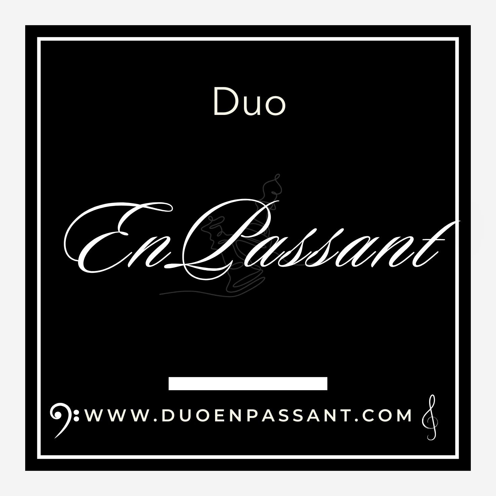

About
Duo EnPassant is a new violin and cello duo featuring Merily Leotoots and Anna Ryland-Jones. Although the ensemble was founded only recently, the two musicians have been performing together for nearly a year in various chamber groups and festivals across Estonia, Finland, and the United Kingdom.
Both Merily and Anna studied at London’s renowned Guildhall School of Music & Drama. Interestingly, their first meeting did not take place in the UK but in Estonia, where a natural musical connection quickly developed. Their collaboration soon evolved into the idea of forming a dedicated duo — a space to grow together artistically and to craft a shared sound world.
The name EnPassant comes from the chess term meaning “in passing,” symbolising fleeting moments and unexpected opportunities — themes that resonate deeply with the duo’s musical philosophy and expressive approach.
Upcoming Concerts
- 📍 London — December 2025 — St Martin-in-the-Fields
- 📍 Tallinn — February 2026 — EMTA Concert Hall
- 📍 Kraków — April 2026 — Capella Cracoviensis Series
Contact & Social Media
For bookings and inquiries:
Meist
Duo EnPassant on uus viiuli- ja tšelloduo, kuhu kuuluvad Merily Leotoots ja Anna Ryland-Jones. Kuigi ansambel loodi alles hiljuti, on muusikud mänginud koos juba ligi aasta, esinedes mitmesugustes koosseisudes ja muusikafestivalidel nii Eestis, Soomes kui ka Ühendkuningriigis.
Merily ja Anna on mõlemad õppinud Londonis mainekas Guildhall School of Music & Drama’s. Huvitaval kombel ei kohtunud nad esmakordselt mitte Inglismaal, vaid hoopis Eestis, kus kujunes kiiresti välja hea loominguline klapp. Ühise koostöö käigus kasvas välja idee luua püsiv duo, mis looks võimaluse areneda koos muusikutena ning kujundada ühine kõlapilt.
Duo EnPassant sai nime šahhitermini järgi, viidates mööduvatele hetkedele ja ootamatutele võimalustele – teemadele, mis peegelduvad ka nende muusikalises käsitluses.
Tulevased kontserdid
- 📍 London — detsember 2025 — St Martin-in-the-Fields
- 📍 Tallinn — veebruar 2026 — EMTA kontserdisaal
- 📍 Kraków — aprill 2026 — Capella Cracoviensis sari
Kontakt ja sotsiaalmeedia
Broneeringud ja päringud: